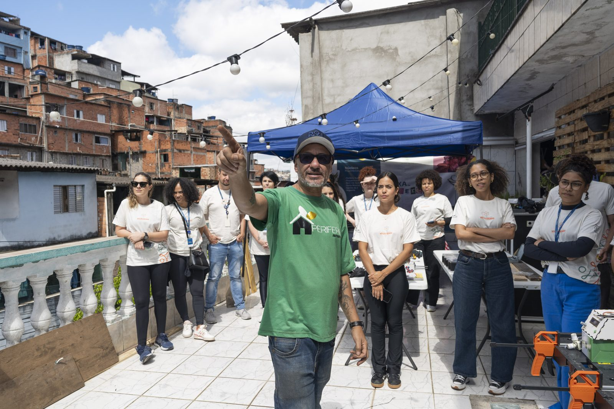
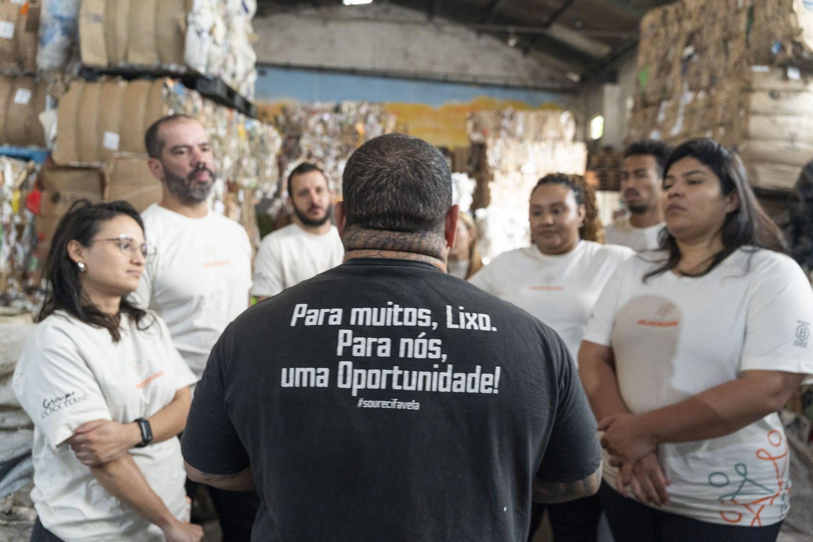
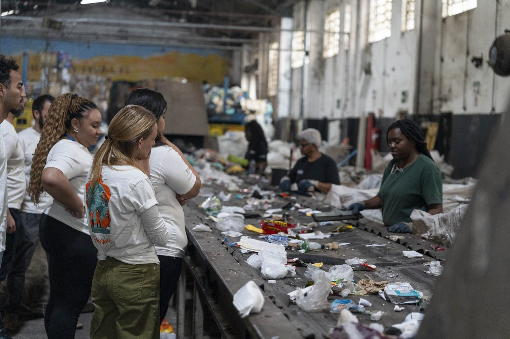
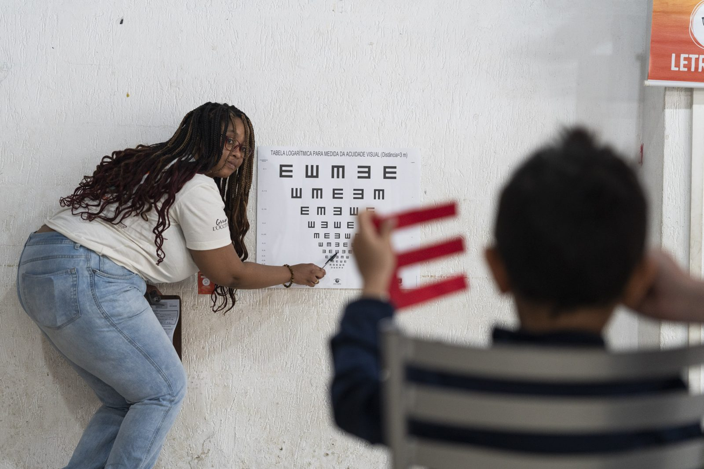
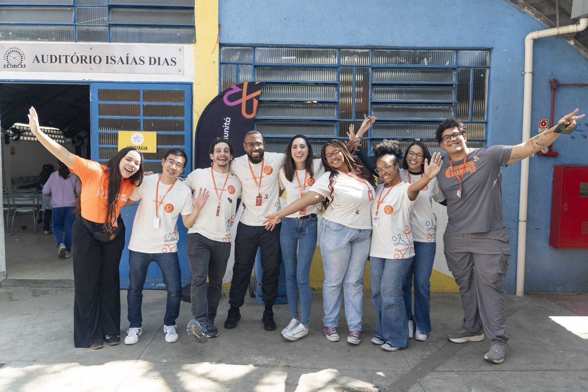

Voluntariado corporativo2023–2025
Grupo L'Occitane
Programa de voluntariado
- voluntários
- 503
- atividades
- 23
- organizações apoiadas
- 19
- anos de parceria
- 3
A EmPacto atuou durante 3 anos consecutivos como curadora, gestora e produtora de toda a estratégia de voluntariado da empresa, culminando em uma série de eventos e investimentos durante a Semana de Voluntariado da L'Occitane e envolvendo centenas de colaboradores e dezenas de organizações sociais.